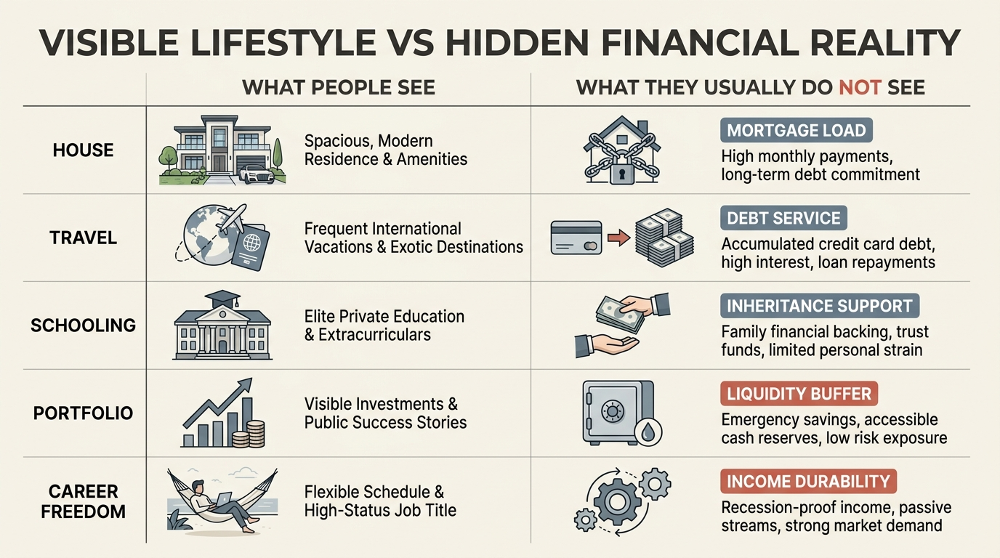

The Comparison Trap in the Digital Age
Modern wealth comparison no longer happens against a few neighbors or coworkers. It happens against a continuous feed of edited lives. Houses are shown without mortgages, vacations without debt service, business exits without the graveyard of failed attempts, and consumption without the savings rate that made it possible. The result is not only envy. It is calibration failure.
The comparison trap matters because households make real decisions from false reference classes. A family can be objectively ahead on savings, liquidity, and optionality while still feeling behind because the comparison set has been silently upgraded to a visible upper tail. Once that happens, spending, housing, school choices, and work expectations can start optimizing for status parity rather than balance-sheet resilience.
Core thesis: digital comparison is a wealth risk because it changes the benchmark people use to judge whether they are doing well. The benchmark becomes more visible, more aspirational, and more statistically distorted. Households then absorb the consumption cues of a filtered elite without absorbing the underlying income durability, asset base, or risk tolerance that may have supported those choices.

Why Digital Comparison Feels More Authoritative Than It Is
Human beings always compared status. What changed is scale, speed, and selection bias. A local social circle used to include ordinary variance: people with similar schools, similar jobs, similar housing stock, and visible tradeoffs. Digital feeds instead pull in a much broader set of signals, but only from people whose lives are photogenic, monetizable, or algorithmically rewarded. The comparison class therefore becomes upwardly filtered.
That filter hides three essential facts. First, visible consumption says little about net worth. Second, even visible net worth says little about liquidity or fragility. Third, many households being copied live in entirely different income geographies, inheritance structures, or career distributions than the viewer does. Comparison then stops being a rough social check and becomes a mismeasured benchmark.
This is why the trap belongs on WealthMeter rather than in generic psychology language. Once benchmark error becomes habitual, it feeds directly into housing burden, lifestyle creep, and lower saving tolerance.
The Rich People Most Visible Online Are Not The Full Wealth Distribution
The internet overrepresents certain kinds of wealth: founder wealth, finance wealth, celebrity-adjacent consumption, luxury real estate, and portable digital businesses. It underrepresents the quiet upper tier made up of regional operators, professional partners, long-held business owners, and households that look ordinary while compounding steadily. That means digital comparison often pushes viewers toward the most performative fraction of the distribution, not the most decision-useful fraction.
The difference matters because performative wealth and durable wealth are not the same thing. One is optimized for display. The other is optimized for endurance, optionality, and control over future time. Many households borrow from the first while needing the second.
This is one reason the topic connects directly to The Rich but Not Famous Economy. The real upper tier is broader and quieter than social media implies. When households forget that, they start chasing symbols that correlate weakly with resilience.
How Comparison Turns Into Financial Damage
The comparison trap usually does not begin with one irrational splurge. It works by shifting what feels normal. A larger house stops looking aspirational and starts looking baseline. International travel stops looking exceptional and starts looking overdue. Private-school tuition, designer categories, club memberships, or a second home start reading as markers of adulthood rather than as specific balance-sheet choices with carrying costs.
Once the baseline moves, every other calculation changes. Savings rates that used to feel strong now feel insufficient. A prudent emergency reserve can feel embarrassingly small relative to people who display spending but not liquidity. Work dissatisfaction rises because the household is now benchmarking itself against a more extreme consumption tier than its own income structure can safely support.
The trap therefore taxes both sides of the household ledger. It raises expected spending and reduces satisfaction with already-strong progress. That combination is difficult because it can push people into leverage, burnout, or career decisions aimed at image repair rather than strategic gain.

Why High Earners Are Not Immune
High earners often assume the comparison trap is mainly a problem for lower-income households. In practice the mechanism can intensify as income rises because the relevant peer group becomes even more heterogeneous. A household earning three hundred thousand dollars may compare itself against founders, finance professionals, inherited wealth, or coastal real-estate winners whose balance sheets were built under very different conditions.
That is how strong income can coexist with weak felt security. The household is not failing on an absolute basis. It is failing against a mischosen benchmark. If the benchmark is far enough above the household's durable income engine, the result is a permanent feeling of not having enough no matter how much cash flow improves.
What Better Calibration Looks Like
- Separate visible consumption from invisible balance-sheet facts. Ask what you actually know about the other household's leverage, inheritance, tax base, and income durability.
- Choose a benchmark that matches your planning problem. If you are deciding how much house to carry, the relevant peer group is households with similar liquidity, location, and career risk, not whoever is loudest online.
- Track progress against structure, not spectacle. Savings rate, optionality, debt burden, and cash runway are better planning metrics than aesthetic parity.
- Reduce exposure to benchmarks that consistently produce spending pressure without information value. Not every data stream deserves a place inside household planning.
- Use distribution tools correctly. Rank is most useful when it clarifies tradeoffs, not when it becomes another source of status anxiety.
The objective is not to stop noticing other people. It is to stop importing their visible outputs as if they were complete financial statements.
Known, Inferred, And Unknown
| Category | Assessment |
|---|---|
| Known | Social comparison affects satisfaction and status perception, and digital platforms expand both the scale and frequency of comparison exposure. |
| Known | Visible consumption is an unreliable proxy for wealth, liquidity, leverage, and income durability. |
| Known | Households routinely misread relative position when the benchmark group changes from local peers to a more affluent or more visible subset. |
| Inferred | Digital comparison raises the probability of lifestyle lock-in, lower savings tolerance, and work dissatisfaction by normalizing a more extreme reference class. |
| Unknown | Which interventions most durably reduce status-driven overspending once comparison pressure is built into a household's identity and social environment. |
The Practical Reading For WealthMeter
The comparison trap is best treated as a calibration failure. A household does not need to become emotionally invulnerable. It needs a benchmark discipline strong enough to resist importing other people's edited lives as planning inputs. When that discipline is absent, even good income and strong saving can feel inadequate, and feeling inadequate is often expensive.
That is why the most useful counterweight is structural. Use a real distribution lens, track the variables that support optionality, and distinguish quiet wealth from performative wealth. Once those distinctions are made, much of the digital-status fog clears quickly.
Further Reading Inside The Site
This article connects directly to The Great Baseline War, The Rich but Not Famous Economy, and The Asset-Rich, Cash-Poor Paradox. Together they show why relative position, visible status, and true financial resilience are different measurements.
Source List
Festinger L. A theory of social comparison processes. Human Relations. 1954.
Veblen T. The Theory of the Leisure Class. 1899.
Duesenberry JS. Income, Saving and the Theory of Consumer Behavior. 1949.
Frank RH. Luxury Fever: Why Money Fails to Satisfy in an Era of Excess. 1999.
Selected behavioral-finance and household-consumption literature on status comparison, reference groups, and visible-consumption bias.
Stress-test the lifespan side of this balance-sheet story.
Open the matching LifeMeter scenario with a prefilled planning profile so the wealth case and the health-runway case can be read together.